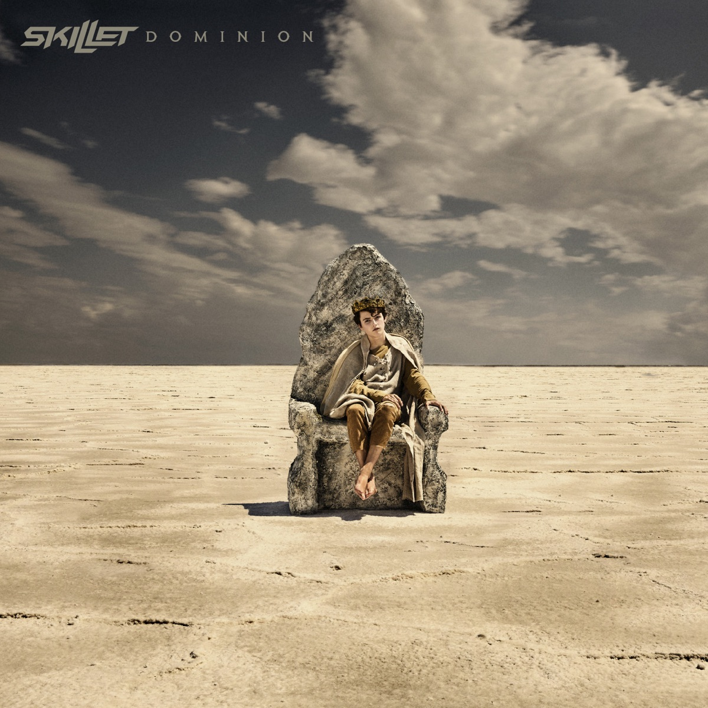
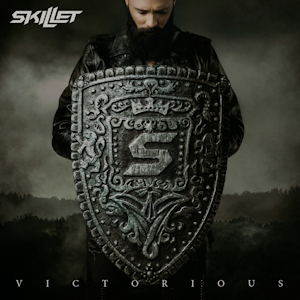

Biografia
Skillet é uma banda de rock cristão de Memphis,Tennessee, formada em 1996. A banda é composta por John Cooper (vocalista, baixista), Korey Cooper (guitarrista, tecladista e backing vocal), Bem Kasica (guitarrista) e Jen Ledger (baterista). Skillet gravou sete álbuns em estúdio e recentemente, foi indicado ao Grammy Awards com dois deles, Collide (2004) e Comatose (2006). De lá pra cá, a banda tem expandido em muitos gêneros diferentes, incluindo Alternativo, Rock Industrial e Hard Rock.
Music 🎸

